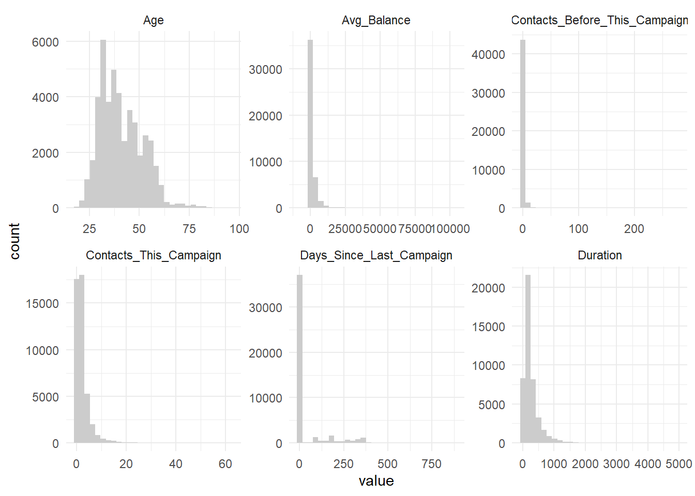

library(tidyverse)
library(ggplot2)
library(purrr)
library(scales)
library(reshape2)
#library(corrplot)
library(GGally)DATA_622_Project_1
This assignment focuses on Exploratory Data Analysis (EDA), one of the most important steps in data science. Surveys show data scientists spend 60-80% of their time on data prep, and EDA helps identify data gaps, improve quality, and shape better features — all leading to better models.
The dataset comes from a study by Moro, Cortez, and Rita conducted between 2008 and 2013, where they analyzed telemarketing data from a Portuguese bank to predict the success of selling long-term deposits. The research team applied feature selection and modeling techniques, ultimately comparing logistic regression, decision trees, neural networks, and support vector machines to find the best predictive model.
For this EDA, I’m using a pre-processed version of that original dataset, which has a reduced number of features.
1. Dataset Overview
The dataset contains 45,211 records and 17 columns. There are no missing values: as we go through this EDA exercise, it is clear that this dataset has been thoroughly cleaned.
df <- read_delim("https://raw.githubusercontent.com/AmandaSFox/DATA622/refs/heads/main/Assignment_1/bank-full.csv",
delim = ";",
quote = "\"")
glimpse(df)Rows: 45,211
Columns: 17
$ age <dbl> 58, 44, 33, 47, 33, 35, 28, 42, 58, 43, 41, 29, 53, 58, 57, …
$ job <chr> "management", "technician", "entrepreneur", "blue-collar", "…
$ marital <chr> "married", "single", "married", "married", "single", "marrie…
$ education <chr> "tertiary", "secondary", "secondary", "unknown", "unknown", …
$ default <chr> "no", "no", "no", "no", "no", "no", "no", "yes", "no", "no",…
$ balance <dbl> 2143, 29, 2, 1506, 1, 231, 447, 2, 121, 593, 270, 390, 6, 71…
$ housing <chr> "yes", "yes", "yes", "yes", "no", "yes", "yes", "yes", "yes"…
$ loan <chr> "no", "no", "yes", "no", "no", "no", "yes", "no", "no", "no"…
$ contact <chr> "unknown", "unknown", "unknown", "unknown", "unknown", "unkn…
$ day <dbl> 5, 5, 5, 5, 5, 5, 5, 5, 5, 5, 5, 5, 5, 5, 5, 5, 5, 5, 5, 5, …
$ month <chr> "may", "may", "may", "may", "may", "may", "may", "may", "may…
$ duration <dbl> 261, 151, 76, 92, 198, 139, 217, 380, 50, 55, 222, 137, 517,…
$ campaign <dbl> 1, 1, 1, 1, 1, 1, 1, 1, 1, 1, 1, 1, 1, 1, 1, 1, 1, 1, 1, 1, …
$ pdays <dbl> -1, -1, -1, -1, -1, -1, -1, -1, -1, -1, -1, -1, -1, -1, -1, …
$ previous <dbl> 0, 0, 0, 0, 0, 0, 0, 0, 0, 0, 0, 0, 0, 0, 0, 0, 0, 0, 0, 0, …
$ poutcome <chr> "unknown", "unknown", "unknown", "unknown", "unknown", "unkn…
$ y <chr> "no", "no", "no", "no", "no", "no", "no", "no", "no", "no", …colSums(is.na(df)) age job marital education default balance housing loan
0 0 0 0 0 0 0 0
contact day month duration campaign pdays previous poutcome
0 0 0 0 0 0 0 0
y
0 The data consists of bank customers who were contacted as part of a marketing campaign and the features describe customer demographics, financial history, and characteristics of their interactions, as well as a label “y” which indicates whether they did choose the new deposit account.
Before doing further analysis, I changed the column names to be more meaningful: this is my personal preference so that I can more clearly see how the data stacks up against my expectations based on my business knowledge.
Now let’s get to know our population, starting with the categorical variables:
df_final <- df %>%
set_names("Age","Occupation","Marital_Status","Education",
"In_Default","Avg_Balance","Housing_Loan","Personal_Loan",
"Contact_Type","Day","Month","Duration","Contacts_This_Campaign",
"Days_Since_Last_Campaign","Contacts_Before_This_Campaign",
"Previous_Outcome","Y")Simple frequency distributions paint a picture of a typical, middle-class, adult population of target customers for banking products:
- Most were employed: only 10.0% were not currently employed (retired, unemployed, student) and 0.6% were unknown. The remaining 89.4% were split among eight categories, with blue-collar (21.5%), management (20.9%), and technician (16.8%) being the most common.
- Education varied, in alignment with the occupations above: 29.4% had tertiary educatio, 51.3% secondary, 15.2% primary
- Most were married (60.2%)
- Financially stable: 98.2% were not in default, 55.6% had housing loans and only 16% had personal loans.
The “previous outcome” field is interesting: 3.3% of previous interactions were deemed “successes,” which raises the question why they were called again. 81.7% were “unknown” and 4.1% “other,” so I do not believe this field is very meaningful.
Finally, 11.4% of contacts resulted in a new deposit account, which was the goal of the marketing outreach.
# categorical column list
cat_cols <- df_final %>%
select(where(is.character)) %>%
names()
for (col in cat_cols) {
df_final %>%
count(.data[[col]]) %>%
mutate(Pct = round((n / sum(n)) * 100, 1)) %>%
arrange(desc(Pct)) %>%
print()
}# A tibble: 12 × 3
Occupation n Pct
<chr> <int> <dbl>
1 blue-collar 9732 21.5
2 management 9458 20.9
3 technician 7597 16.8
4 admin. 5171 11.4
5 services 4154 9.2
6 retired 2264 5
7 self-employed 1579 3.5
8 entrepreneur 1487 3.3
9 unemployed 1303 2.9
10 housemaid 1240 2.7
11 student 938 2.1
12 unknown 288 0.6
# A tibble: 3 × 3
Marital_Status n Pct
<chr> <int> <dbl>
1 married 27214 60.2
2 single 12790 28.3
3 divorced 5207 11.5
# A tibble: 4 × 3
Education n Pct
<chr> <int> <dbl>
1 secondary 23202 51.3
2 tertiary 13301 29.4
3 primary 6851 15.2
4 unknown 1857 4.1
# A tibble: 2 × 3
In_Default n Pct
<chr> <int> <dbl>
1 no 44396 98.2
2 yes 815 1.8
# A tibble: 2 × 3
Housing_Loan n Pct
<chr> <int> <dbl>
1 yes 25130 55.6
2 no 20081 44.4
# A tibble: 2 × 3
Personal_Loan n Pct
<chr> <int> <dbl>
1 no 37967 84
2 yes 7244 16
# A tibble: 3 × 3
Contact_Type n Pct
<chr> <int> <dbl>
1 cellular 29285 64.8
2 unknown 13020 28.8
3 telephone 2906 6.4
# A tibble: 12 × 3
Month n Pct
<chr> <int> <dbl>
1 may 13766 30.4
2 jul 6895 15.3
3 aug 6247 13.8
4 jun 5341 11.8
5 nov 3970 8.8
6 apr 2932 6.5
7 feb 2649 5.9
8 jan 1403 3.1
9 oct 738 1.6
10 sep 579 1.3
11 mar 477 1.1
12 dec 214 0.5
# A tibble: 4 × 3
Previous_Outcome n Pct
<chr> <int> <dbl>
1 unknown 36959 81.7
2 failure 4901 10.8
3 other 1840 4.1
4 success 1511 3.3
# A tibble: 2 × 3
Y n Pct
<chr> <int> <dbl>
1 no 39922 88.3
2 yes 5289 11.7Next, our numeric variables. Note that most of these have very long tails that make histograms difficult; we will handle those with log10 shortly.
First, to complete our analysis of the population, I broke out Age separately.
This shows a solid, mostly working-age adult population with a nearly normal distribution:
# numerical column list: removed "Day" as it is not a meaningful number
df_num <- df_final %>%
select(-Day) %>%
select(where(is.numeric))
# Age
summary(df_num$Age) Min. 1st Qu. Median Mean 3rd Qu. Max.
18.00 33.00 39.00 40.94 48.00 95.00 plot_age <- df_num %>%
ggplot(aes(Age))+
geom_histogram(bins = 30,fill="seagreen") +
scale_x_continuous(breaks = seq(0, 100, by = 5)) +
theme_minimal()
print(plot_age)
Moving on to other numeric columns, we learn more about the outreach: call duration, etc.
# Other numeric columns: top 90% only due to skew
# pivot to support a single faceted histogram
df_long <- df_num %>%
pivot_longer(everything())
plot_hist <- df_long %>%
ggplot(aes(value))+
geom_histogram(bins = 30,fill="gray80") +
facet_wrap(~name, scales = "free") +
theme_minimal()
plot_hist
plot counts:
df %>% count(job) %>% ggplot(aes(x = job, y = n)) +
geom_col() + theme(axis.text.x = element_text(angle = 45, hjust = 1))
contacts before this campaign
df_final %>% count(Contacts_Before_This_Campaign) +
contacts this campaign
df_final %>% count(Contacts_This_Campaign)
Bar charts for categorical variables
for (col in cat_cols) { print(ggplot(df_final, aes_string(x = col, fill = col)) + geom_bar() + theme_minimal() + theme(axis.text.x = element_text(angle = 45, hjust = 1)) + labs(title = paste(“Bar Chart of”, col), x = col, y = “Count”)) }
```
Structure & Initial Review ```{r Copy Edit glimpse(df) summary(df) The dataset is extremely clean, with all variables correctly typed (numeric or categorical). There are no missing values, and the data appears pre-processed.
Univariate Analysis - Individual Variable Distributions 3.1 Categorical Variables The distribution of each categorical variable was reviewed to check for class imbalance.
{r Copy Edit categorical_cols <- df %>% select(where(is.character)) %>% names()
for (cat in categorical_cols) { cat_table <- df %>% count(.data[[cat]]) %>% mutate(percent = (n / sum(n)) * 100)
print(cat_table)
ggplot(df, aes_string(x = cat, fill = cat)) + geom_bar() + theme_minimal() + theme(axis.text.x = element_text(angle = 45, hjust = 1)) + labs(title = paste(“Distribution of”, cat)) %>% print() } 3.2 Numeric Variables Summary statistics for numeric variables show central tendency, spread, and possible outliers.
{r Copy Edit numeric_cols <- df %>% select(where(is.numeric)) %>% names()
for (num in numeric_cols) { summary_stats <- df %>% summarise(min = min(.data[[num]], na.rm = TRUE), mean = mean(.data[[num]], na.rm = TRUE), median = median(.data[[num]], na.rm = TRUE), max = max(.data[[num]], na.rm = TRUE), sd = sd(.data[[num]], na.rm = TRUE))
print(paste(“Summary for”, num)) print(summary_stats) } 4. Relationships Between Variables 4.1 Numeric vs Numeric - Correlation Analysis A correlation matrix was computed to identify relationships between numeric features.
{r Copy Edit cor_matrix <- cor(df %>% select(where(is.numeric)), use = “pairwise.complete.obs”) cor_matrix No numeric pairs exhibited strong correlation (all below 0.5). This confirms that numeric features like age, balance, and contact count are relatively independent, with no clear linear relationships between them.
4.2 Numeric vs Categorical - Boxplots Boxplots were used to review how numeric features (e.g., age, balance, duration) vary across categorical groups like job, education, and marital.
{r Copy Edit for (cat in categorical_cols) { for (num in numeric_cols) { ggplot(df, aes_string(x = cat, y = num)) + geom_boxplot(outlier.color = “red”, outlier.shape = 1) + theme_minimal() + theme(axis.text.x = element_text(angle = 45, hjust = 1)) + labs(title = paste(num, “by”, cat)) %>% print() } } 4.3 Categorical vs Categorical - Stacked Bar Charts Relationships between categorical variables were visualized using stacked bar charts.
{r Copy Edit if (length(categorical_cols) > 1) { for (i in 1:(length(categorical_cols) - 1)) { for (j in (i + 1):length(categorical_cols)) { cat1 <- categorical_cols[i] cat2 <- categorical_cols[j]
ggplot(df, aes_string(x = cat1, fill = cat2)) +
geom_bar(position = "fill") +
scale_y_continuous(labels = label_percent()) +
labs(title = paste("Proportion of", cat2, "within", cat1),
y = "Proportion") +
theme_minimal() +
theme(axis.text.x = element_text(angle = 45, hjust = 1)) %>%
print()
}} } 5. Outliers Boxplots revealed some outliers, particularly in balance, which likely reflect loan balances at the high end rather than errors. These values are plausible within the context of the data, so they will be retained.
Missing Values {r Copy Edit colSums(is.na(df)) The dataset contains no missing values, simplifying downstream processing.
Duplicate or Inconsistent Values {r Copy Edit nrow(df) - nrow(distinct(df)) There are no duplicate rows in the dataset. All categorical labels were consistently formatted, and no inconsistent values were detected.
Domain Knowledge Check The data aligns with basic domain expectations for a bank marketing campaign:
Most customers hold lower balances, consistent with consumer banking. Higher balances do not necessarily correlate with customer engagement (e.g., call duration), reflecting the transactional nature of loan accounts. Certain jobs (e.g., management) and education levels are overrepresented, which is common in marketing campaigns targeting specific customer segments. The call durations vary widely, which is expected given some customers may decline quickly while others engage in longer conversations. 9. Summary of Key Findings The dataset is clean and ready for modeling, with no missing values, duplicates, or data quality issues. Numeric variables are mostly independent, with no strong correlations, which simplifies model selection. Categorical variables exhibit some class imbalance, particularly in job, which may require consideration in model training. No surprising or unexpected patterns were found; the data aligns with reasonable expectations for a financial marketing campaign.
Works Cited
ChatGPT. “ChatGPT.” Chatgpt.com, 2024, chatgpt.com. Accessed Feb. 2025.
R coding assistance.
Moro, Sérgio et al. “A data-driven approach to predict the success of bank telemarketing.” Decis. Support Syst. 62 (2014): 22-31.
Moro, S., P. Rita, and P. Cortez. “Bank Marketing.” UCI Machine Learning Repository, 2014, https://doi.org/10.24432/C5K306. Accessed Feb. 2025.